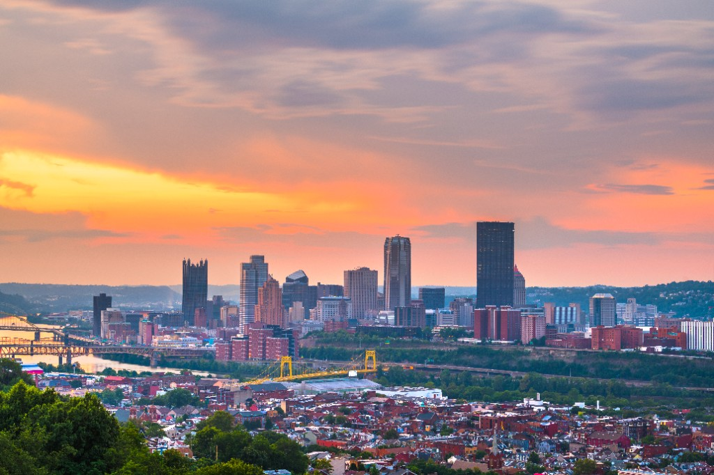
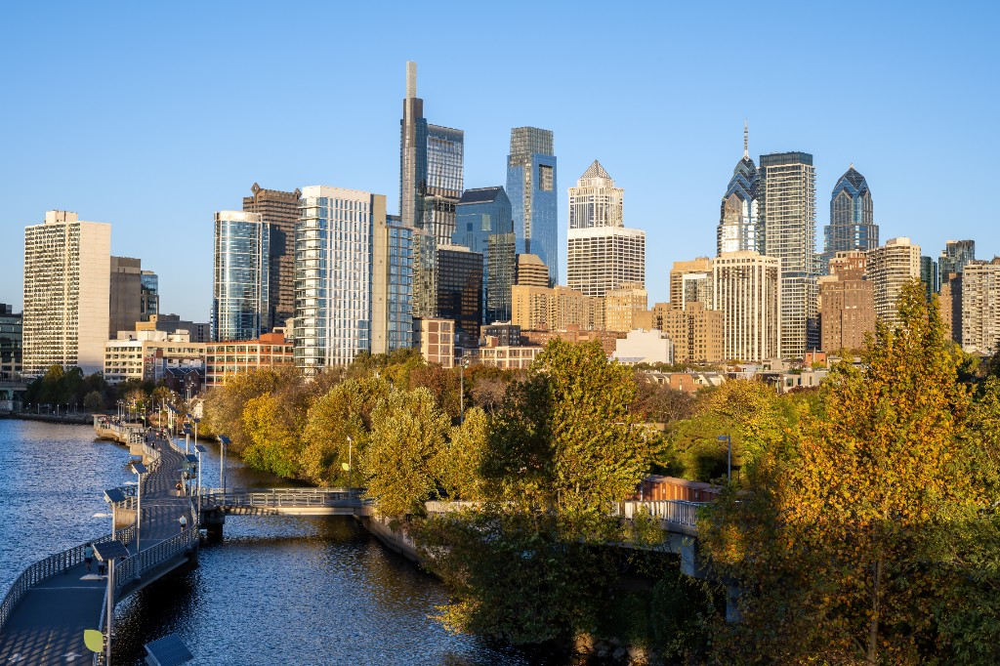
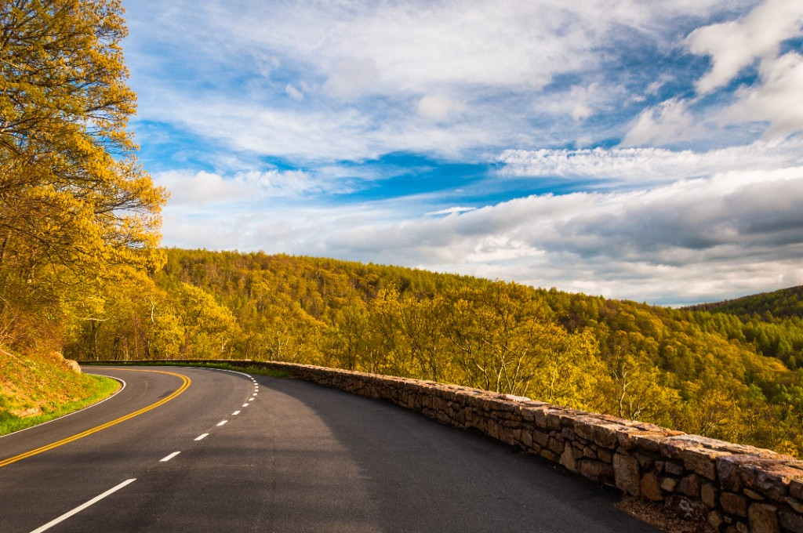
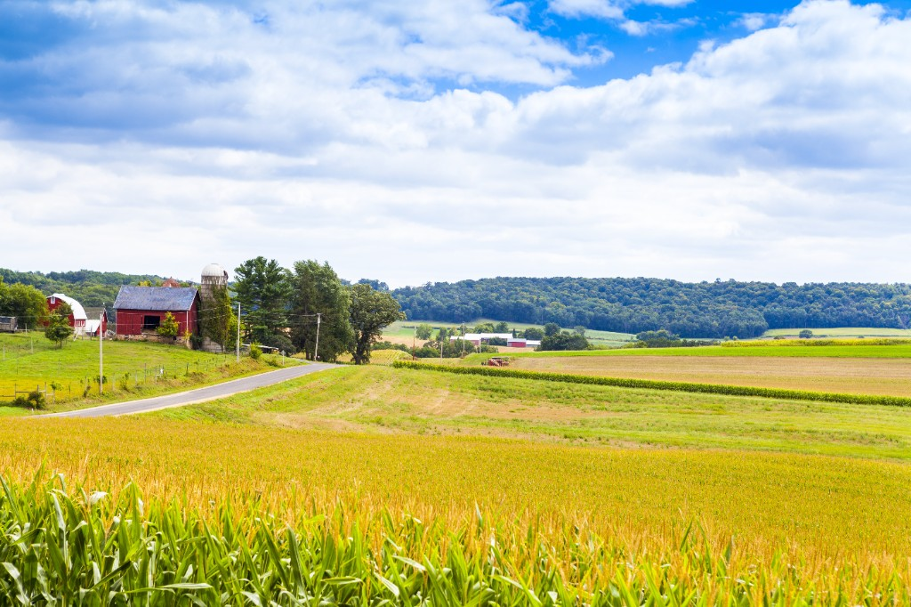

Coming from Pittsburgh?
Typical drive: about 2.5 to 3.5 hours
Trip Planning
Lakewood Reserve at Raystown Lake is an ideal destination for travelers looking for a nature-forward Pennsylvania getaway. If you are searching for cabins near Raystown Lake, weekend trips from nearby cities, or road-trip destinations within about four hours, this guide highlights popular starting regions and what guests love nearby.

Typical drive: about 2.5 to 3.5 hours
Typical drive: about 3 to 3.5 hours
Typical drive: about 3.5 to 4 hours

Typical drive: about 3.5 to 4 hours
Typical drive: about 1 to 2.5 hours

Typical drive: about 3.5 to 4 hours

Typical drive: about 2 to 3.5 hours

Typical drive: worth the trip from wherever you are.